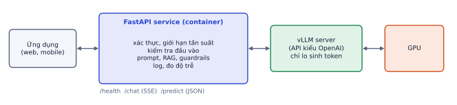
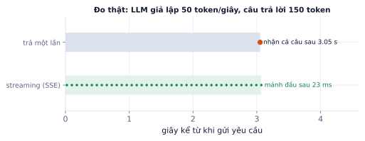

Bài 1
Định luật Little
tính tayLưu lượng đỉnh 20 yêu cầu/giây, mỗi yêu cầu xử lý trung bình 2 giây.
Lời giải
20 × 2 = 40. Server phải chịu được khoảng 40 kết nối mở cùng lúc; với streaming, mỗi kết nối giữ mở suốt thời gian sinh.
Model nằm trong notebook thì chỉ bạn dùng được. Bài này đưa model ra thành một API mà ứng dụng khác gọi được: FastAPI cho logic, streaming để người dùng thấy chữ chạy, Docker để chạy giống nhau ở mọi nơi, vLLM để phục vụ LLM hiệu quả, và cách tính cần bao nhiêu GPU. Code trong bài đã chạy thật (FastAPI 0.162), kèm số đo độ trễ streaming. Đây là nhóm kỹ năng "production" mà tin tuyển dụng nhắc nhiều sau Python và LLM.
Tin tuyển dụng AI Engineer remote gần như luôn có các từ khóa FastAPI, Docker, deploy, "production". Khách hàng freelance cũng không nhận notebook: họ cần một địa chỉ gọi được, chạy ổn định, có giới hạn và log. Bài này biến model của bạn thành thứ người khác dùng được.

Tách hai lớp như hình có lợi:
base_url.FastAPI dựng API bằng type hint của Python: tự kiểm tra dữ liệu vào bằng Pydantic, tự sinh tài liệu tương tác tại /docs, hỗ trợ async.
from fastapi import FastAPI, HTTPException
from pydantic import BaseModel, Field
app = FastAPI(title="Review sentiment API")
class Req(BaseModel):
text: str = Field(min_length=1, max_length=2000)
class Resp(BaseModel):
label: str
score: float
@app.get("/health")
def health():
return {"status": "ok"}
@app.post("/predict", response_model=Resp)
def predict(req: Req):
label, score = model_predict(req.text) # model nạp một lần khi khởi động
return Resp(label=label, score=score)
Chạy: uvicorn app:app --host 0.0.0.0 --port 8000, mở http://localhost:8000/docs để thử trực tiếp trên trình duyệt.
| Nguyên tắc | Cách làm |
|---|---|
| Nạp model một lần | ở cấp module hoặc trong hàm lifespan khi khởi động, không trong hàm xử lý |
| Kiểm tra đầu vào | Field(min_length, max_length), kiểu dữ liệu, giá trị cho phép |
| Mã lỗi rõ ràng | 422 dữ liệu sai (FastAPI tự trả khi Pydantic từ chối), 429 quá tải, 503 model chưa sẵn sàng hoặc lỗi phía sau, 504 quá thời gian |
| Health check | /health để Docker, load balancer, hệ thống giám sát biết service còn sống |
| Log mỗi yêu cầu | thời gian, độ dài đầu vào/ra, mã lỗi, độ trễ; không log nội dung nhạy cảm |
Đã chạy thử service ở trên với uvicorn và gửi yêu cầu bằng httpx:
{"message": ""} → 422 (vi phạm min_length=1).max_length=2000).def (đồng bộ): FastAPI chạy hàm trong một thread pool. Phù hợp cho model chạy CPU/GPU trực tiếp trong process.async def: phù hợp khi hàm chủ yếu chờ (gọi vLLM, gọi API, đọc database). Trong lúc chờ, server phục vụ yêu cầu khác.Trong thí nghiệm, 20 yêu cầu gửi cùng lúc tới endpoint async gọi một LLM giả lập (mỗi yêu cầu chờ 3 giây) hoàn tất sau 3,17 giây tổng cộng, không phải 60 giây: server chỉ chờ, không bận tính toán.
Gọi hàm chặn trong async def. Viết async def chat() rồi bên trong gọi requests.post(...) hay model.generate(...) (đồng bộ, mất vài giây) thì toàn bộ server đứng im trong lúc đó, mọi người dùng khác phải chờ. Trong async def dùng client async (httpx.AsyncClient, openai.AsyncOpenAI); việc tính toán nặng thì để trong def thường hoặc chuyển sang worker riêng.
LLM sinh khoảng 50 token/giây; câu trả lời 500 token mất 10 giây. Không streaming, người dùng nhìn màn hình trống 10 giây. Streaming gửi từng mảnh ngay khi có.
Phổ biến nhất là Server-Sent Events (SSE): một kết nối HTTP giữ mở, server đẩy các dòng data: ... cách nhau bởi một dòng trống. API của OpenAI, Anthropic đều dùng SSE.
import asyncio
from fastapi.responses import StreamingResponse
async def fake_llm(text, n=150): # giả lập LLM 50 token/giây
for i in range(n):
await asyncio.sleep(0.02)
yield f"tok{i} "
@app.post("/chat/stream")
async def chat_stream(req: Req):
async def gen():
async for piece in fake_llm(req.text):
yield f"data: {piece}\n\n"
yield "data: [DONE]\n\n"
return StreamingResponse(gen(), media_type="text/event-stream")

Tổng thời gian không đổi, nhưng cảm nhận khác hẳn: người dùng bắt đầu đọc gần như ngay lập tức. Con số quan trọng nhất với chatbot là thời gian tới token đầu (TTFT, P6.3).
Streaming qua proxy bị gom lại. Nginx và một số proxy mặc định buffer phản hồi, nên người dùng vẫn nhận cả cục sau 10 giây dù server stream đúng. Tắt buffering cho endpoint SSE (header X-Accel-Buffering: no với Nginx) và kiểm tra bằng curl -N từ ngoài vào.
Docker đóng gói code, thư viện, phiên bản Python, thậm chí CUDA vào một image. Chạy image ở đâu cũng giống nhau: hết cảnh "máy tôi chạy được mà".
FROM python:3.11-slim
WORKDIR /app
COPY requirements.txt .
RUN pip install --no-cache-dir -r requirements.txt
COPY . .
EXPOSE 8000
HEALTHCHECK CMD python -c "import urllib.request; urllib.request.urlopen('http://localhost:8000/health')"
CMD ["uvicorn", "app:app", "--host", "0.0.0.0", "--port", "8000"]
Mỗi lệnh trong Dockerfile tạo một lớp (layer). Khi build lại, Docker dùng lại các lớp không đổi, và chỉ cần một lớp đổi là mọi lớp sau nó phải build lại.
| Thứ tự | Sửa một dòng code thì |
|---|---|
COPY requirements.txt → pip install → COPY . . |
chỉ chạy lại COPY . . (vài giây) |
COPY . . → pip install |
cài lại mọi thư viện (có khi 5–10 phút) |
Thêm các thói quen:
.dockerignore loại .git, data/, checkpoint, __pycache__ để không gửi chúng vào build.--gpus all.Khi có nhiều container (service + vLLM + database), docker compose khai báo tất cả trong một file và khởi động cùng nhau; depends_on với điều kiện service_healthy giúp service chỉ nhận yêu cầu khi vLLM đã nạp xong model.
vLLM có server tương thích API OpenAI, kèm continuous batching và PagedAttention (P6.3):
vllm serve Qwen/Qwen2.5-1.5B-Instruct --max-model-len 4096 --gpu-memory-utilization 0.85
# rồi gọi bằng bất kỳ client OpenAI nào tới http://localhost:8000/v1
--max-model-len: độ dài context tối đa; nhỏ hơn thì còn nhiều bộ nhớ cho KV cache, phục vụ được nhiều người cùng lúc.--gpu-memory-utilization: phần VRAM vLLM được dùng (trọng số + KV cache).Từ service, gọi bằng openai.AsyncOpenAI(base_url="http://vllm:8000/v1", api_key="...") với stream=True, rồi chuyển từng mảnh sang SSE của bạn.
Số yêu cầu đang xử lý đồng thời = lưu lượng × thời gian xử lý trung bình.
Lưu lượng đỉnh 6 yêu cầu/giây, mỗi yêu cầu (streaming tới hết) mất trung bình 3,5 giây:
6 × 3,5 = 21 yêu cầu đang chạy cùng lúc. Server, proxy và vLLM phải chịu được ít nhất 21 kết nối mở và 21 chuỗi trong batch.
locust, k6), tìm thông lượng tối đa mà p95 độ trễ vẫn chấp nhận được.Load test: một GPU phục vụ 5 yêu cầu/giây với p95 dưới 4 giây. Lưu lượng đỉnh 12 yêu cầu/giây.
Theo dõi p95/p99 latency, không chỉ trung bình: người dùng nhớ những lần chậm nhất, và hàng đợi bùng nổ khi gần hết công suất (đã thấy ở mô phỏng P5.7).
Ghi nhớ: demo chạy được chưa phải là sản phẩm. Sản phẩm cần health check, giới hạn đầu vào, xử lý lỗi, log, và con số về thông lượng, độ trễ đo bằng load test.
| Chủ đề | Ý chính |
|---|---|
| Kiến trúc | service FastAPI (logic) + vLLM (sinh token), mỗi cái một container |
| FastAPI | Pydantic kiểm tra đầu vào, /docs, /health, mã lỗi rõ ràng |
| async | dùng khi chờ I/O; không gọi hàm chặn trong async def |
| Streaming | SSE; TTFT vài chục ms thay vì chờ cả câu; tắt buffering ở proxy |
| Docker | cài thư viện trước khi copy code; .dockerignore; không đóng model, khóa vào image |
| Năng lực | Little: đồng thời = lưu lượng × thời gian; load test, chia, dư 30–50% |
| Thuật ngữ | Nghĩa |
|---|---|
| endpoint | một địa chỉ API (POST /chat) |
| Pydantic | thư viện kiểm tra dữ liệu bằng type hint |
| uvicorn | server ASGI chạy app FastAPI |
| SSE | Server-Sent Events, server đẩy dữ liệu qua kết nối HTTP mở |
| image / container | gói đóng sẵn / một lần chạy của image |
| layer cache | Docker dùng lại các lớp không đổi khi build |
| health check | kiểm tra service còn sống |
| load test | thử tải để đo thông lượng và độ trễ |
| Little's law | L = λ × W |
| p95 / p99 | 95% / 99% yêu cầu nhanh hơn mức này |
Lưu lượng đỉnh 20 yêu cầu/giây, mỗi yêu cầu xử lý trung bình 2 giây.
20 × 2 = 40. Server phải chịu được khoảng 40 kết nối mở cùng lúc; với streaming, mỗi kết nối giữ mở suốt thời gian sinh.
Load test cho thấy một GPU phục vụ được 8 yêu cầu/giây với p95 dưới 3 giây. Lưu lượng đỉnh 20 yêu cầu/giây, muốn dư 30%.
20/8 = 2,5 → 3 GPU. Với dư 30%: 26/8 = 3,25 → 4 GPU.
Một GPU thuê giá ví dụ 1,2 USD/giờ, chạy đầy tải 8 yêu cầu/giây.
8 × 3600 = 28.800 yêu cầu/giờ. 1,2/28,8 ≈ 0,042 USD mỗi 1.000 yêu cầu khi GPU chạy đầy. GPU thường không chạy đầy cả ngày, nên chi phí thật cao hơn: cần tự động giảm số GPU khi ít người dùng.
Dockerfile dưới build chậm (mỗi lần sửa một dòng code phải cài lại mọi thư viện) và image rất nặng. Chỉ ra ba vấn đề và sửa.
FROM python:3.11
COPY . /app
WORKDIR /app
RUN pip install -r requirements.txt
COPY models/llama-8b /app/models
CMD python app.py
COPY . /app trước khi cài thư viện: mọi thay đổi code làm mất cache bước pip install. Sửa: copy requirements.txt, cài, rồi mới copy code.python:3.11 đầy đủ nặng hơn nhiều so với python:3.11-slim.--no-cache-dir cho pip, thêm .dockerignore để loại data/, .git, checkpoint.Viết FastAPI service gọi một LLM (qua client OpenAI-compatible tới vLLM): /health, /chat nhận message (tối đa 2.000 ký tự), trả SSE từng mảnh, timeout và trả 503 khi model lỗi.
from fastapi import FastAPI, HTTPException
from fastapi.responses import StreamingResponse
from pydantic import BaseModel, Field
from openai import OpenAI, APIError
app = FastAPI()
client = OpenAI(base_url="http://localhost:8000/v1", api_key="local", timeout=30)
MODEL = "Qwen/Qwen2.5-1.5B-Instruct"
class ChatReq(BaseModel):
message: str = Field(min_length=1, max_length=2000)
@app.get("/health")
def health():
try:
client.models.list()
return {"status": "ok"}
except Exception:
raise HTTPException(503, "model chưa sẵn sàng")
@app.post("/chat")
def chat(req: ChatReq):
try:
stream = client.chat.completions.create(model=MODEL, stream=True, max_tokens=512,
messages=[{"role": "user", "content": req.message}])
except APIError as e:
raise HTTPException(503, f"lỗi model: {e}")
def gen():
for chunk in stream:
delta = chunk.choices[0].delta.content if chunk.choices else None
if delta:
yield f"data: {delta}\n\n"
yield "data: [DONE]\n\n"
return StreamingResponse(gen(), media_type="text/event-stream")
Dùng model của Lab 8 (hoặc Qwen2.5-1.5B-Instruct).
Các bước
/predict cho tác vụ có cấu trúc của Lab 8 (trả JSON đã validate).docker compose chạy cả vLLM và service, service chờ vLLM healthy mới nhận request.slowapi), trả 429 khi vượt.locust: tăng dần từ 1 tới 64 người dùng đồng thời, ghi thông lượng, p50, p95, tỉ lệ lỗi.Xong khi
docker compose up là dùng được, có /health.